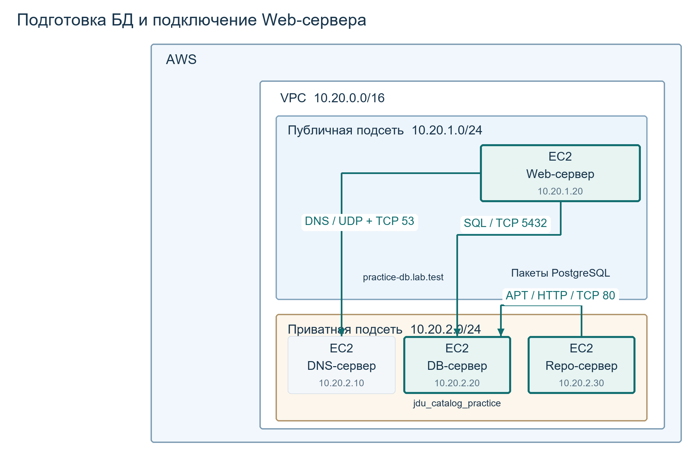

P3 Подключение к PostgreSQL с аутентификацией
Практика P0–P5 · Задания M0–M5
Связанное задание: M3.
Что сделать в Practice3
Настройте PostgreSQL на DB-сервере и подключитесь к учебной БД с Web по паролю.
Схема задания

Пример решения (порядок действий)
P3.1 Установить PostgreSQL с сервера пакетов
Среда выполнения:
SSM-терминал DB-сервера: ssm-user
Установите PostgreSQL 16 на DB-сервере. Затем распакуйте файлы SQL для следующих шагов.
Команды: нумерация внутри этого шага
# 1. Обновить список пакетов с внутреннего сервера.
sudo apt-get update
# 2. Установить postgresql-16 postgresql-client-16 и обязательные зависимости с сервера пакетов.
sudo apt-get install --no-install-recommends postgresql-16 postgresql-client-16
# 3. Сверить фиксированный hash и распаковать приложение/SQL преподавателя.
sudo python3 -B /var/lib/jdu-web/lesson-resources-r1/offline_assets.py
# 4. Показать версию, кластер, порт и состояние PostgreSQL.
pg_lsclusters
# 5. Прочитать настройку БД от postgres: SHOW data_directory;
sudo -u postgres psql -X -d postgres -c "SHOW data_directory;"
Ожидаемый результат и его смысл:
В pg_lsclusters видны версия 16 и кластер main. Каталог данных - /var/lib/postgresql/16/main.
P3.2 Настроить адрес и порт PostgreSQL
Среда выполнения:
SSM-терминал DB-сервера: ssm-user
В postgresql.conf укажите внутренний IP DB 10.20.2.20 и порт 5432. Для паролей задайте SCRAM-SHA-256.
Найдите нужные параметры, задайте значения ниже и снимите # в начале этих строк.
sudo cp -an /etc/postgresql/16/main/postgresql.conf /etc/postgresql/16/main/postgresql.conf.before-p4
sudo nano /etc/postgresql/16/main/postgresql.conf
Текст для ввода в nano
listen_addresses = '10.20.2.20'
port = 5432
password_encryption = 'scram-sha-256'
Ожидаемый результат и его смысл:
Сохраните три параметра в одном файле. Перезапуск выполняется в P3.4 после настройки доступа.
P3.3 Разрешить соединения с БД от Web-сервера
Среда выполнения:
SSM-терминал DB-сервера: ssm-user
В pg_hba.conf задайте источники, БД и роли. Разрешите указанные пары БД и ролей для практики и задания с внутреннего IP Web 10.20.1.20.
Замените правила подключения приведёнными ниже и сохраните файл.
sudo cp -an /etc/postgresql/16/main/pg_hba.conf /etc/postgresql/16/main/pg_hba.conf.before-p4
sudo nano /etc/postgresql/16/main/pg_hba.conf
Текст для ввода в nano
local all postgres peer
local all all reject
host jdu_catalog_practice catalog_practice_setup 10.20.1.20/32 scram-sha-256
host jdu_catalog_practice catalog_practice_app 10.20.1.20/32 scram-sha-256
host jdu_catalog catalog_setup 10.20.1.20/32 scram-sha-256
host jdu_catalog catalog_app 10.20.1.20/32 scram-sha-256
host all all 0.0.0.0/0 reject
host all all ::/0 reject
Ожидаемый результат и его смысл:
PostgreSQL применяет первую совпавшую строку сверху. Сначала расположены разрешения, затем строки reject для остальных соединений.
P3.4 Перезапустить PostgreSQL и проверить настройки
Среда выполнения:
SSM-терминал DB-сервера: ssm-user
Перезапустите PostgreSQL, чтобы применить сохранённые параметры и правила доступа.
Команды: нумерация внутри этого шага
# 1. Перезапустить postgresql@16-main с обновлённой настройкой.
sudo systemctl restart postgresql@16-main
# 2. Прочитать текущее состояние postgresql@16-main.
systemctl is-active postgresql@16-main
# 3. Убедиться, что PostgreSQL слушает 10.20.2.20:5432.
sudo ss -lntp
# 4. Прочитать настройку БД от postgres: SHOW password_encryption;
sudo -u postgres psql -X -d postgres -c "SHOW password_encryption;"
# 5. Найти ошибки HBA; в норме 0 строк.
sudo -u postgres psql -X -d postgres -c \
"SELECT line_number,error FROM pg_hba_file_rules WHERE error IS NOT NULL;"
Ожидаемый результат и его смысл:
Служба - active, адрес и порт - 10.20.2.20:5432, способ хранения пароля - scram-sha-256, ошибки правил доступа - (0 rows).
P3.5 Создать учебную БД и две роли
Среда выполнения:
SSM-терминал DB-сервера: ssm-user
Готовые SQL создают БД jdu_catalog_practice. Роль catalog_practice_setup подготавливает таблицы, catalog_practice_app нужна для обычной работы. Сначала выведите SQL, затем передайте его в psql.
Команды: нумерация внутри этого шага
# 1. Перейти в рабочий каталог /var/lib/jdu-web/lesson-resources-r1/app.
cd /var/lib/jdu-web/lesson-resources-r1/app
# 2. Показать SQL создания учебных ролей без выполнения.
python3 -B profile_sql.py --profile practice 01_create_roles.sql
# 3. Сформировать SQL создания учебных ролей и применить через postgres к нужной БД.
python3 -B profile_sql.py --profile practice 01_create_roles.sql | sudo -u postgres \
psql -X -v ON_ERROR_STOP=1 -d postgres
# 4. Сформировать SQL создания учебной БД и схемы и применить через postgres к нужной БД.
python3 -B profile_sql.py --profile practice 02_prepare_schema.sql | sudo -u postgres \
psql -X -v ON_ERROR_STOP=1 -d jdu_catalog_practice
Ожидаемый результат и его смысл:
CREATE ROLE появляется дважды, CREATE DATABASE - один раз.
Если не получилось:
При already exists возможен повторный запуск. Не используйте DROP; проверьте роли и БД через \du и \l. Убедитесь, что psql справа от pipe не сообщил SQL error.
P3.6 Задать пароль каждой роли БД
Среда выполнения:
SSM-терминал DB-сервера: ssm-user
Откройте psql на DB-сервере. Выполняйте \password по одной строке и дважды введите выбранный пароль каждой роли. Символы скрыты. Оба пароля понадобятся в P4. Задайте разные пароли длиной не менее 16 символов.
Команды: нумерация внутри этого шага
# 1. В терминале DB открыть psql от postgres; следующие действия внутри psql.
sudo -u postgres psql -X -d postgres
Далее вводить внутри psql
-- 2. В psql скрыто задать пароль роли catalog_practice_setup.
\password catalog_practice_setup
-- 3. В psql скрыто задать пароль роли catalog_practice_app.
\password catalog_practice_app
-- 4. В psql проверить атрибуты и права учебных ролей.
\du catalog_practice_*
-- 5. Выйти из psql в терминал ОС того же DB-сервера.
\q
Ожидаемый результат и его смысл:
В выводе \du есть catalog_practice_setup и catalog_practice_app.
P3.7 Подключиться к учебной БД с Web-сервера
Среда выполнения:
SSM-терминал Web-сервера: ssm-user
Откройте Session Manager для Web-сервера как в P0. В psql сначала укажите внутренний IP DB, затем имя practice-db.lab.test из P2. В обоих случаях используйте пароль catalog_practice_app из P3.6.
Команды: нумерация внутри этого шага
# 1. Установить postgresql-client-16 и обязательные зависимости с сервера пакетов.
sudo apt-get install --no-install-recommends postgresql-client-16
# 2. Подключиться с Web к нужной БД с существующим паролем и выполнить SELECT.
psql -X -h 10.20.2.20 -U catalog_practice_app -d jdu_catalog_practice -W -c \
'SELECT current_database(),current_user,1 AS value;'
# 3. Получить IPv4 practice-db.lab.test через системный resolver.
getent ahostsv4 practice-db.lab.test
# 4. Подключиться с Web к нужной БД с существующим паролем и выполнить SELECT.
psql -X -h practice-db.lab.test -U catalog_practice_app -d jdu_catalog_practice -W -c \
'SELECT current_database(),current_user,1 AS value;'
Ожидаемый результат и его смысл:
В обоих случаях результат показывает БД jdu_catalog_practice, роль catalog_practice_app и значение 1.
Если не получилось:
Если по IP подключение работает, а по имени нет, проверьте системный DNS и учебное имя DB из P2. При отказе аутентификации проверьте источник, БД, роль и пароль. Не публикуйте DB в Internet для диагностики.
P3.8 Сохранить пароль БД для проверки на Web-сервере
Среда выполнения:
SSM-терминал Web-сервера: ssm-user
Запустите команду и дважды введите пароль catalog_practice_app. Ввод скрыт, пароль сохраняется на Web в защищённом файле для проверки подключения. Откройте страницу оценок на своём компьютере и проверьте P3.
Команды: нумерация внутри этого шага
# 1. Скрыто ввести существующий пароль учебной БД и сохранить только на Web.
sudo python3 -B /var/lib/jdu-web/lesson-resources-r1/database_secret.py --profile \
practice
Ожидаемый результат и его смысл:
Терминал выводит D11_EXISTING_DB_PASSWORD_STORED_LOCALLY. На странице оценок видны девять критериев P3.
Если не получилось:
Если файл уже есть, не создавайте заново. В P4 тот же пароль вводится в настройку приложения. M3 использует отдельные БД/роли mission.
Пример чтения вывода (не вводить)
current_database | current_user | value
jdu_catalog_practice | catalog_practice_app | 1
Пример чтения SELECT; ширина столбцов может отличаться. Сверьте БД, роль и value=1. Это не доказательство права менять таблицы.